SELEZIONA I LIVELLI:
Giorni di sole
in più rispetto ad oggi
0
+100
Millimetri di pioggia
in più rispetto ad oggi
0
+100
Eventi estremi
in più rispetto ad oggi
0
+100

SELEZIONA IL TEMPO:
La mappa mostra la previsione di uno scenario futuro nel campo del cambiamento climatico. Ogni livello rappresenta una differente componente atmosferica: i giorni di sole, in rosso; la percentuale di eventi estremi in giallo e la quantità di pioggia in azzurro. La densità dei puntini mostra la quantità, per ogni componente, a cui sarà soggetta l’Italia nel prossimi 30, 60 e 90 anni. Le mappe sono sovrapponibili per permettere una visione completa della situazione climatica a cui sarà soggetto il nostro Paese nel futuro. Cosa succederebbe se venisse attuato l’ adattamento climatico? Toccando lo schermo è possibile esplorare la situazione che mostra la differenza con uno scenario attenuato dall’adattamento climatico.